유통관리사-3급 (2018-11-04 기출문제)
1과목: 유통상식
1. 다음 중 도매상의 소매상에 대한 기능으로 옳지 않은 것은?
- 소비자가 요구하는 물품을 수집하여 소매상에게 분산하는 수집분산 기능
- 생산자가 판매한 대량의 화물을 소매상이 원하는 만큼 소량으로 분할하는 기능
- 도매상의 신용거래로 소매상의 재정을 원활하게 하는 재정안정 기능
- 소매상의 상품보관을 위한 비용 절감 및 보관기관 단축으로 인한 상품회전율 증대 기능
- 소매상을 대신해서 생산물을 보관하고 운반해주는 수송보관의 기능
(정답률: 28%)

2. 유통의 기본 기능 중 상적 유통기능에 해당하는 것은?
- 운송 및 보관 기능
- 장소적·시간적 통일 기능
- 소유권 이전 기능
- 금융 기능
- 위험부담 기능
(정답률: 59%)
3. 아래 글상자 설명에 해당하는 소매상 발전이론은?
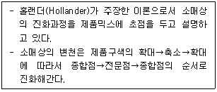
- 변증법적 이론
- 자연도태 이론
- 소매상 아코디언 이론
- 소매상 수명주기 이론
- 소매상 수레바퀴 이론
(정답률: 70%)
4. 소비자기본법(법률 제15696호, 2018.6.12., 일부개정) 상의 소비자의 기본적 권리로 옳지 않은 것은?
- 합리적인 소비 생활을 위하여 필요한 교육을 받을 권리가 있다.
- 물품 등의 사용으로 인하여 입은 피해에 대하여 신속하고 공정한 절차에 따라 적절한 보상을 받을 권리가 있다.
- 안전하고 쾌적한 소비생활 환경에서 소비할 권리가 있다.
- 소비자 스스로의 권익을 증진하기 위해서 단체를 조직하고 이를 통하여 활동할 수 있는 권리가 있다.
- 소비자는 상품 및 서비스를 선택함에 있어서 필요한 정보를 제공받을 권리가 있으나, 기업의 노하우에 해당하는 원산지, 원재료 등에 대한 정보는 제공이 제한되기도 한다.
(정답률: 67%)
5. 판매원이 고객에게 서비스를 제공할 때에 지켜야하는 기본규칙으로 옳은 것은?
- 필요할 경우에는 고객과의 언쟁도 가능하다는 점을 인지한다.
- 고객의 이야기는 상품을 판매하는 중에만 경청하면 된다.
- 자신이 속한 조직에 자부심을 가지고 응대한다.
- 외모는 최대한 최신 유행에 맞추어 치장한다.
- 언어적인 의사표현에만 신중을 기한다.
(정답률: 89%)
6. 근로자라 함은 직업의 종류를 불문하고 사업 또는 사업장에서 임금을 목적으로 근로를 제공하는 자를 말한다. 청소년 근로자에 대한 설명으로 옳지 않은 것은?
- 청소년보호법에 따르면 청소년이란 만 19세 미만인 사람을 뜻한다.
- 청소년은 미성숙한 사회인이기 때문에 성인과 동일한 최저임금을 받지 않는다.
- 청소년은 근로시간 제한이나, 야간근무 금지 등 특별한 보호를 받는다.
- 청소년 근로자도 유급 휴일과 휴가를 받을 수 있다.
- 일하다가 다쳤다면 산업재해보상보험법이나 근로기준법에 따라 치료와 보상을 받을 수 있다.
(정답률: 93%)
7. 아래 글상자 신문기사의 판매원이 수행한 고객활성화 활동의 짝으로 옳은 것은?
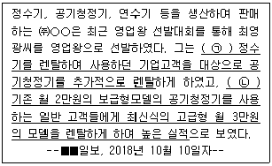
- ㉠-교차판매, ㉡-관계판매
- ㉠-상승판매, ㉡-교차판매
- ㉠-관계판매, ㉡-교차판매
- ㉠-교차판매, ㉡-상승판매
- ㉠-상승판매, ㉡-관계판매
(정답률: 66%)
8. 직업선택의 기준에 대한 내용으로 가장 옳지 않은 것은?
- 적성: 자신의 적성과 소질에 맞는 일을 할 때 일에 대한 즐거움을 느끼고 능률이 오를 수 있으므로 그 직업이 자기 적성에 맞는지를 고려한다.
- 장래성: 직업은 일시적인 것이 아니라 평생직업이 될 수 있으므로 전망과 발전가능성을 고려한다.
- 경제적 소득: 직업의 보람은 반드시 경제적 소득에 의해서만 얻을 수 있으므로 경제적 소득이 유일한 직업선택 기준이 되어야 한다.
- 자아실현: 직업을 통해서 스스로의 인생목표를 실현할 수 있도록 고려한다.
- 직업환경 등: 직업병 발생유무, 정신적·신체적 적응가능성, 전문성도 고려대상이 될 수 있다.
(정답률: 84%)
9. 직업윤리에 관련된 내용으로 가장 옳지 않은 것은?
- 직업윤리란 일반윤리의 한 특수한 형태이다.
- 직업윤리는 모든 직업인에게 일반적으로 요구되는 '직업 일반의 윤리'와 각 직종에 따라 특수하게 요구되는 '특정직업의 윤리'로 구분된다.
- 직업윤리는 국민윤리나 일반윤리보다 더 넓은 의미의 직업에 대한 가치 체계이다.
- 일반윤리와 직업윤리는 서로 상호보완적 관계에 있어야 한다.
- 직업인들이 직업윤리를 통해 자발적으로 상호간의 신뢰를 구축할 수 있어야 공정하고 합리적인 사회가 운영될 수 있다.
(정답률: 70%)
10. 아래 글상자는 윤리경영 측면에서 본 이해관계자에 따른 핵심가치와 주요 관심 이슈들에 대해 기술한 것이다. 각 주요 관심 이슈들에 따른 이해관계자가 가장 옳지 않은 것은?
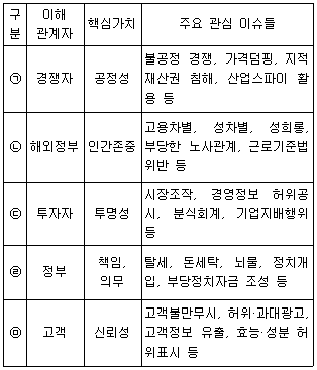
- ㉠
- ㉡
- ㉢
- ㉣
- ㉤
(정답률: 72%)
11. 고객을 응대하는 판매원의 인사예절에 대한 설명 중 가장 옳지 않은 것은?
- 인사말의 끝은 한음 정도 내려서 정중한 분위기를 연출한다.
- 일상생활에서의 보통 인사는 30도 정도의 각도를 유지한다.
- 항상 자연스러운 미소를 머금는다.
- 고객을 기다리게 할 때는 간단한 목례를 한다.
- “어서 오십시오” 등의 응대는 숙인 상태에서 실시한다.
(정답률: 48%)
12. 성희롱의 대처방법으로 가장 옳지 않은 것은?
- 직접적으로 거부의사를 전달하는 것은 피하는 것이 좋다.
- 정식으로 항의하는 것이 중요하다.
- 가해자와 직접 부딪치기 어려울 때에는 문서로 발송한다.
- 혼자 대처하기 어려울 때는 제3자에 의한 신고도 가능하다.
- 회사 외부의 신고기관에 도움을 요청할 수 있다.
(정답률: 91%)
13. 소매점이 구사하는 전략들에 대한 내용으로 가장 옳지 않은 것은?
- 병행수입이란 소매업자가 스스로 해외의 도매업자 등에게 직접 구입하는 것을 의미한다.
- 병행수입은 수입총판을 통하여 구매하는 것보다 저렴하게 매입할 수 있다.
- 병행수입은 해외 생산자의 직접적인 애프터서비스가 확실히 보장된다는 장점이 있다.
- 도미넌트 전략이란 특정한 어느 지역에 집중적으로 복수의 체인점을 개설하는 전략을 의미한다.
- 도미넌트 전략을 통해 해당지역에서는 체인점 지명도가 올라갈 수 있으나 인구성장이 지체되는 지역에서는 체인점이 도산할 가능성이 있다.
(정답률: 67%)
14. 편의점(CVS)의 특성에 대한 설명으로 가장 옳은 것은?
- 마진율과 상품회전율이 낮다.
- 입점은 주로 교외지역에 위치한다.
- 다수의 노동력으로 유지 및 관리한다.
- 상품 구매 시 시간의 구애를 많이 받는다.
- 소비자 가격은 비할인 정찰제를 원칙으로 한다.
(정답률: 68%)
15. 아래 글상자 괄호 안에 들어갈 올바른 용어로만 나열된 것은?
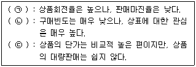
- ㉠: 선매품, ㉡: 전문품, ㉢: 편의품
- ㉠: 전문품, ㉡: 선매품, ㉢: 편의품
- ㉠: 편의품, ㉡: 전문품, ㉢: 선매품
- ㉠: 전문품, ㉡: 편의품, ㉢: 선매품
- ㉠: 선매품, ㉡: 편의품, ㉢: 전문품
(정답률: 75%)
16. 매장 내 상품구성에 대한 설명으로 옳지 않은 것은?
- 상품구성을 결정할 때 주고객이 어느 계층인지를 고려해야 한다.
- 상품구성을 결정할 때 고객의 라이프 스타일을 고려해야 한다.
- 고객의 구매결정요소에 맞는 상품으로 구성해야 한다.
- 편의품, 선매품, 전문품이 골고루 분포될 수 있도록 구성해야 한다.
- 판매방법 및 서비스에 맞게 상품구성이 결정되어야 한다.
(정답률: 53%)
17. 백화점의 유통 특성으로 가장 옳지 않은 것은?
- 다양한 상품계열 확보
- 머천다이징 중시
- 고객관계관리 중시
- 재고 위험은 백화점이 모두 부담
- 편리한 입지와 쾌적한 쇼핑공간 제공
(정답률: 84%)
18. 인터넷 유통경로에 대한 설명으로 가장 옳지 않은 것은?
- 풍부한 정보 제공과 편리하며 경제적이라는 이유로 빠른 성장을 구가하고 있다.
- 인터넷 채널은 재화의 판매 뿐만 아니라 서비스의 판매에도 많은 영향을 미친다.
- 초창기 인터넷을 통해 생산자가 소비자에게 직접 판매하는 탈중간상화가 유통의 주요 현상으로 나타났고 이후 중간상의 기능은 약화되었다.
- 기존 점포형 소매업과 인터넷 소매업을 동시에 이용하는 다채널전략에 이어 옴니채널전략으로 진화하고 있다.
- 다른 채널에 비해 반품률이 높으며 환불에 대한 소비자불만이 많은 편이다.
(정답률: 41%)
19. 유통의 기본 개념과 용어에 대한 설명으로 가장 옳지 않은 것은?
- 상권(trade area)은 한 점포가 고객을 유인할 수 있는 지역범위를 말한다.
- 로지스틱스(logistics)란 원재료의 조달에서 제품판매, 재활용에 이르는 전과정을 총괄적으로 관리하는 것을 말한다.
- 상품계획이란 고객의 수요를 예측하고, 고객에게 잘 팔릴 수 있는 상품을 선정하고, 그 상품을 확보, 관리하는 모든 활동을 말한다.
- 판매촉진이란 소비자로 하여금 제품을 구매하도록 유도하기 위해 추가적인 인센티브를 제공하는 활동을 말한다.
- 총마진수익률(GMROI)은 이익과 회전율을 동시에 감안하여 평균회전율을 총이익률로 나누어서 구한다.
(정답률: 45%)
20. 서비스 제공 실패 후, 종업원들의 회복노력을 통해 고객신뢰가 재창출될 수 있다. 이를 위해 종업원 행동을 자극할 수 있는 방안으로 옳지 않은 것은?
- 비정형적인 일이 발생했을 때 주도권을 행사하고 임기응변에 능할 수 있도록 종업원들을 훈련시킨다.
- 종업원들이 문제를 발생시킨 것이므로 종업원들에게 고객을 만족시킬 권한과 재량을 최소한으로 제한한다.
- 문제해결을 잘한 직원들에게는 더욱 훌륭하게 되도록 격려하기 위해 동기부여하고 보상을 제공한다.
- 종업원들이 문제를 효과적으로 해결할 수 있도록 기술과 정보를 제공해 준다.
- 고객서비스 담당자들은 감정적으로 스트레스를 받기 때문에 즐겁고 안정적인 작업환경을 제공하도록 한다.
(정답률: 83%)
2과목: 판매 및 고객관리
21. 마케팅 믹스(4P)에 해당하지 않는 것은?
- 포지셔닝(Positioning)
- 제품(Product)
- 가격(Price)
- 유통(Place)
- 촉진(Promotion)
(정답률: 79%)
22. 기업이 판매향상을 위해서 구사하는 푸쉬(push) / 풀(pull)전략에 대해 옳지 않은 것은?
- push 전략은 중간상으로 하여금 그 제품을 취급하고 촉진하여 최종소비자에게 판매하도록 한다.
- push 전략은 제조업자가 중간상 촉진을 사용하는 것과 관련된다.
- push 전략은 상표충성도가 낮고 상표선택이 점포에서 이뤄지는 경우에 적절하다.
- pull 전략은 관여수준이 높은 경우, 사람들이 상표들 간의 차이를 지각한 경우에 적절하다.
- 기업은 push 아니면 pull 전략 중 하나의 전략에만 집중하여 마케팅 효과를 극대화해야 한다.
(정답률: 72%)
23. 서브퀄(SERVQUAL)의 5개 품질차원에 따른 행위로 옳지 않은 것은?
- 신뢰성 : 항공사의 경우, 정시 출발·도착 서비스 제공
- 응답성 : 온라인 증권회사의 경우, 대기시간이 없도록 빠른 웹사이트 서비스 제공
- 확신성 : 자동차 수리의 경우, 지식과 경험이 많은 수리공이 서비스 제공
- 공감성 : 병원의 경우, 대기실, 검사실, 의료장비, 문서자료를 구비하여 전문적인 서비스 제공
- 유형성 : 미용실의 경우, 미용시설과 장비를 구비하고 대기장소의 환경을 개선하는 서비스 제공
(정답률: 72%)
24. 기업의 고객관리에 관련된 내용으로 가장 옳지 않은 것은?
- 과거에는 고객과의 장기적인 관계구축보다는 단기적 거래의 판매 전 행동과 판매행동 중심으로 논의되었다.
- 기업의 철학이 생산개념에서 관계마케팅개념으로 바뀌면서 고객만족의 중요성이 대두되기 시작하였다.
- 만족도가 높은 고객들은 오랫동안 충성심을 가지게 된다.
- 일상적인 거래의 경우, 기존 고객을 유지·관리하는 것보다 새로운 고객을 확보하는 데 더 적은 비용이 소요된다.
- 새로운 고객을 확보하는 것 못지 않게 기존 고객을 유지하는 것도 중요하다.
(정답률: 76%)
25. 매장에 들어와 원하는 상품을 찾는 손님에게 종업원이 응대하고 상품을 제시하는 방법으로 가장 적절하지 않은 것은?
- 고객에게 판매를 하겠다는 자세보다는 상품을 사도록 도와준다는 마음으로 접근한다.
- 상품 제시는 낮은 가격에서부터 높은 가격순으로 제시하는 것이 거부감이 적다.
- 고객이 상품을 보고 느끼는 등 오감으로 상품을 실감할 수 있도록 설명한다.
- 고객이 원하는 상품을 파악하고 요구에 맞는 2, 3가지 상품을 추천한다.
- 고객이 상품을 보고난 후 고민을 덜하도록 구매 얘기를 먼저 꺼내는 것이 일반적이다.
(정답률: 83%)
26. 종업원이 고객 응대 시 갖춰야할 화법과 언어에 대한 설명이다. 아래 글상자 괄호 안에 들어갈 용어가 옳게 나열된 것은?
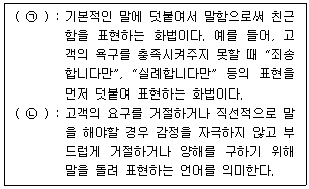
- ㉠ : 간접 화법, ㉡ : 쿠션 언어
- ㉠ : 플러스 화법, ㉡ : 쿠션 언어
- ㉠ : 제로 화법, ㉡ : 쿠션 언어
- ㉠ : 간접 화법, ㉡ : 스펀지 언어
- ㉠ : 플러스 화법, ㉡ : 스펀지 언어
(정답률: 65%)
27. 최근 데이터베이스를 구축하고 이를 활용한 데이터베이스 마케팅이 보편화되었다. 매스마케팅과 비교한 데이터베이스 마케팅의 특징으로 옳지 않은 것은?
- 데이터베이스 마케팅은 대중매체뿐만 아니라 디지털매체도 적극 활용한다.
- 데이터베이스 마케팅은 불특정 대다수가 아닌 개별고객을 대상으로 마케팅 활동을 하도록 지원한다.
- 데이터베이스 마케팅은 고객의 공통 욕구가 아닌 개인화된 욕구를 반영해 마케팅 서비스를 제공하는데 도움을 제공한다.
- 데이터베이스 마케팅은 잠재고객이 아닌 기존고객 유지에만 초점을 맞추어 고객 데이터베이스를 구축한다.
- 데이터베이스 마케팅은 일방향 커뮤니케이션이 아닌 쌍방향 커뮤니케이션을 통해 소비자의 요구를 적극 수용한다.
(정답률: 69%)
28. 은행의 금융서비스나 병원의 의료서비스는 먼저 온 손님부터 서비스를 제공하므로 뒤에 온 손님은 대기하게 된다. 대기 손님을 관리하기 위해 기업이 알아야 할 내용으로 가장 옳지 않은 것은?
- 서비스를 제공받는 시간보다 이를 받기 전 대기가 더 길게 느껴진다.
- 언제 서비스를 받을 수 있을지 모를 경우 대기가 더 길게 느껴진다.
- 제공받을 서비스가 가치가 있을수록 더 짧게 기다린다.
- 대기의 원인이 설명되었을 경우 대기시간은 더 짧게 느껴진다.
- 아무 일도 하는 것 없이 기다릴 경우 대기시간은 더 길게 느껴진다.
(정답률: 60%)
29. 소매점 판매과정이 순서대로 옳게 나열된 것은?
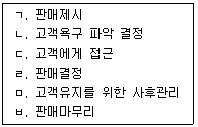
- ㄷ-ㄴ-ㄱ-ㄹ-ㅂ-ㅁ
- ㄷ-ㄱ-ㄴ-ㄹ-ㅁ-ㅂ
- ㄴ-ㄱ-ㄷ-ㄹ-ㅂ-ㅁ
- ㄴ-ㄱ-ㄷ-ㄹ-ㅁ-ㅂ
- ㄷ-ㄴ-ㄱ-ㅂ-ㄹ-ㅁ
(정답률: 76%)
30. 아래 글상자에서 설명하는 점포 레이아웃의 기본 개념으로 옳은 것은?
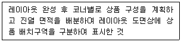
- 페이싱(Facing)
- 스코핑(Scoping)
- 조닝(Zoning)
- 라이닝(Lining)
- 블랙룸(Black room)
(정답률: 46%)
31. 기업이 신제품 론칭(Launching)시 쓰는 가격전략 설명이다. 괄호 안에 들어갈 용어가 바르게 나열된 것은?
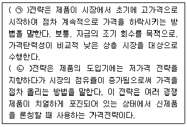
- ㉠ : 스키밍(Skimming), ㉡ : 페니트래이션(Penetration)
- ㉠ : 페니트래이션(Penetration), ㉡ : 스키밍(Skimming)
- ㉠ : 스키밍(Skimming), ㉡ : 인베이딩(Invading)
- ㉠ : 인베이딩(Invading), ㉡ : 스키밍(Skimming)
- ㉠ : 페니트래이션(Penetration), ㉡ : 인베이딩(Invading)
(정답률: 32%)
32. 고객이 매장에 들어가서 상품을 구경하고 구매하는 모든 과정에서 고객동선을 막힘없이 원활히 하기 위해 가장 먼저 고려해야 할 사항은?
- 점포 레이아웃(Lay-out) 설계
- 점포 컨셉(Concept)
- 점포 임대 상황
- 판매원의 서비스 태도
- 점포 운영비용
(정답률: 81%)
33. 아래 글상자 내용은 어떤 고객 유형의 응대 기법인가?
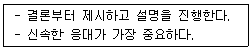
- 성격이 급한 유형
- 말이 많은 유형
- 결정을 미루는 유형
- 의심이 많은 유형
- 잘난 척하는 유형
(정답률: 86%)
34. 아래 글상자 내용은 고객 응대의 6단계이다. 괄호에 들어갈 가장 적절한 답을 고르면?
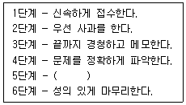
- 문제를 파악한 후 잘잘못을 분별한다.
- 정중하게 검토하고 해결책을 제시한다.
- 불만 사항을 검토하고 고객에게 무조건 사죄한다.
- 언제나 고객의 입장에서 고객이 원하는 것을 모두 수용한다.
- 해결책을 제시할 때 회사의 입장에서 손해를 보지 않도록 진행해야 한다.
(정답률: 86%)
35. 고객관계관리를 통해 기업이 얻을 수 있는 효과로 옳지 않은 것은?
- 고객 점유율보다 시장 점유율에 비중을 두고 있어 잠재시장을 장악하는데 효과적이다.
- 20%의 고객이 80%의 매출액을 올린다는 파레토 법칙에 따라 신규 고객보다는 기존 고객의 유지와 감동을 통해 지속적인 매출을 향상시킬 수 있다.
- 고객이 원하는 상품을 만들고 고객의 욕구를 파악하여 고객이 원하는 상품을 공급하므로 고객 관계를 확립할 수 있다.
- 잠재고객을 활성화시키고, 재구매, 구매 수준 증대를 유도하여 매출을 증가시킨다.
- 고객 데이터를 분석하여 얻은 정보를 활용해 틈새 시장공략에 활용할 수 있다.
(정답률: 67%)
36. 제조기업이 상품을 단 하나만 출시하는 것보다 여러 상품들로 상품라인을 구성하여 출시하는 것이 바람직한 이유로 옳지 않은 것은?
- 고객의 다양한 욕구를 충족시키기 위해
- 고객의 만족도를 제고시키기 위해
- 경쟁자의 시장 진입을 저지하기 위해
- 자기잠식을 방지하지 위해
- 판매량을 증대시키기 위해
(정답률: 49%)
37. 디스플레이의 기본 원칙에 대한 설명으로 가장 옳지 않은 것은?
- 대형상품은 위험성이 없는 위치와 높이에 전시한다.
- 상품의 이름이 전면으로 보이게 진열한다.
- POP(Point-Of-Purchase)는 제품보다 최대한 크고 눈에 띄게 설치한다.
- 유효진열 범위를 잘 지켜야 한다.
- 계절감에 맞게 진열한다.
(정답률: 76%)
38. 판매원이 수행해야 하는 역할로 가장 옳지 않은 것은?
- 판매원은 고객의 잠재적 욕구를 발견하고 설득행위를 통해 잠재고객에게 판매를 성사시킨다.
- 판매원은 고객과의 관계를 통해 고객의 욕구 및 불만 등을 파악하고, 이에 대한 정보를 회사에 전달한다.
- 판매원은 고객의 욕구에 맞는 A/S 등의 부수적인 서비스를 제공한다.
- 판매원은 POP(Point-Of-Purchase)와 같은 비대면 판매수단과는 차별되는 배려와 정성이 수반되는 인간적인 서비스를 제공한다.
- 판매원은 고객을 대신하여 구매대안 상품 및 경쟁상품을 비교하여 추천해 주는 구매대행 서비스를 제공한다.
(정답률: 47%)
39. 사후관리의 주요 활동에 대한 내용 중 가장 옳지 않은 것은?
- 성공적으로 판매를 종료한 후, 상품, 서비스, 고객과의 관계 등 고객만족도를 주기적으로 점검하는 것이 필요하다.
- 고객에게 제시된 가치가 고객 니즈에 적합하지 않을 수도 있기 때문에 고객에게 제공된 가치가 유효한지 사후관리를 통해 파악하고 조정해야 한다.
- 고객의 사전기대는 고객만족과 불만족에 지대한 영향을 미치기 때문에, 영업사원은 고객에게 초기에 많은 약속을 하여 높은 기대를 하게 함으로써 일시적인 판매를 유도한다.
- 고객과 접촉한 데이터는 CRM(Customer Relationship Management) 시스템의 데이터베이스에 저장되어야 하며, 영업사원과 회사는 저장된 데이터를 주기적으로 활용하여 유용한 정보를 도출해야 한다.
- 성공적인 판매가 이루어진 후 기업 뿐만 아니라 영업사원도 고객유지율 및 고객충성도를 제고하는 노력이 필요하다.
(정답률: 88%)
40. 아래 글상자에서 설명하는 POP(Point-Of-Purchase) 진열방식의 명칭으로 가장 옳은 것은?
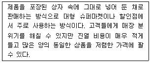
- 테마별 진열
- 구색 진열
- 컷 케이스 진열
- 패키지 진열
- 샌드위치 진열
(정답률: 52%)
41. 상품연출의 절대적인 원칙은 없으나 기본적인 요소들과 원칙은 존재한다고 할 수 있다. 상품연출의 원칙으로 가장 옳은 것은?
- 전방에는 작고 짙은 색의 상품을 낮게 배치한다.
- 상품과 상품 간의 간격을 최대한 좁게하여 공간을 절약한다.
- POP(Point-Of-Purchase)카드는 최대한 큰 것이 효과적이다.
- 한 종류의 상품은 다양한 주제로 연출하고 다채로운 비주얼로 분위기를 표현한다.
- 상품자체의 디자인을 살리고 상품의 앞쪽을 정면으로 보여준다.
(정답률: 64%)
42. 상표 기능을 통해 기업이 얻게 되는 효과로 가장 옳지 않은 것은?
- 상품 선택 가능성을 촉진시킨다.
- 상표 기능을 통해 무형의 자산을 얻을 수 있다.
- 자사의 상품을 차별화시킨다.
- 상품의 정보를 얻을 수 있다.
- 고유한 시장을 얻을 수 있다.
(정답률: 49%)
43. 포장의 원칙에 대한 설명으로 옳지 않은 것은?
- 포장의 크기가 적당하고 깔끔하게 해야 한다.
- 포장을 신속하게 함으로써 고객이 오래 기다리지 않도록 한다.
- 선물인 경우, 리본을 달지 말지에 대해 구매자의 의사를 타진한다.
- 고가의 선물용 상품인 경우, 받는 사람에게 보여주기 위하여 가격표를 떼지 않는 것이 원칙이다.
- 상품의 더럽혀진 부분이나 파손된 부분이 없는지를 확인한 후 포장한다.
(정답률: 81%)
44. 아래 글상자는 무엇에 대한 내용인가?
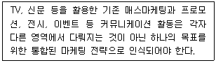
- ATL(Above the Line)
- BTL(Below the Line)
- IMC(Integrated Marketing Communication)
- PPL(Product Placement Advertisement)
- CRM(Customer Relationship Management)
(정답률: 52%)
45. 아래 글상자에서 설명하는 표적마케팅(targeting)의 종류로 옳은 것은?
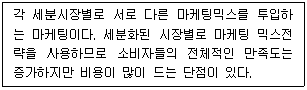
- 비차별화 마케팅
- 차별화 마케팅
- 비집중화 마케팅
- 집중화 마케팅
- 전사적 마케팅
(정답률: 67%)